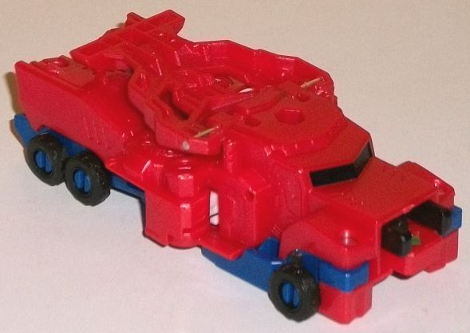
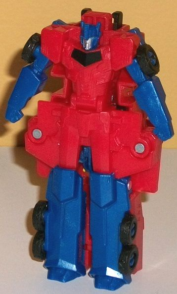
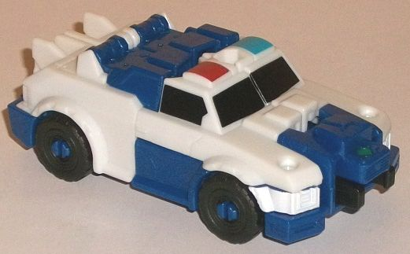
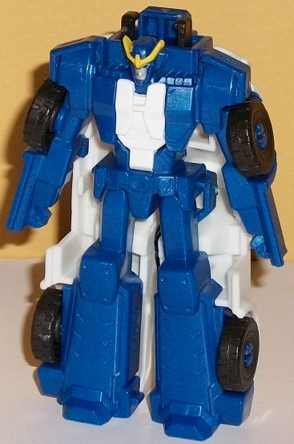
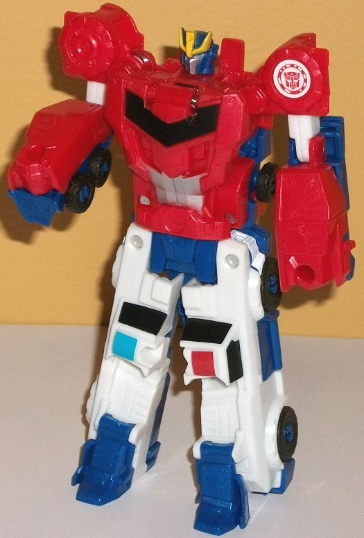

Primestrong
(Crash Combiner) [RID 2015]
Primestrong
(Crash Combiner) [RID 2015]
Allegiances
: Autobot
Size:
Crash Combiner 2-pack
Overall Rating
: 4.3
Optimus
Prime


Difficulty of Transformation
: Very
Easy
Color Scheme
: Dark milky semi-metallic
blue, moderately dark milky semi-metallic red, and some black, dull forest
green, silver, orangish "cheesy" yellow, and moderately light blue
Individual Rating
: 2.6
Optimus Prime's truck
mode is-- ohhhhh that's baaaaaad. Yeah, it's hard to start on what's wrong
with this mode, because almost everything is. Okay, let's start with what's
GOOD about it. Optimus' main two colors of dark blue and red both have
a nice semi-metallic sheen to them on this toy, since there's some glitter
mixed in with the plastic for both of those colors. The red is perhaps
a titch darker than on most other RID2015 Optimus Prime toys, but only
just so. There's a bit of black on the wheels, connector piece, and the
front window, which helps for a bit more contrast. (There's also a forest
green arrow near the connector piece to emphasize that's where you connect
him to another Crash Combiner toy.) It's a basic color scheme, but it still
works, even if there definitely could be a LOT more paint apps in this
mode. There's also some of the RID2015 stylized mold detailing on the front
section of this mode, with the angular way-too-small side windows, trio
of divots on the front hood and rear sides of the vehicle mode, headlights
on the sides of the front, and treaded wheels. Even if they're not painted,
such details are appreciated on such a small toy. Still, MAN this mode
is awful. Let's see here... the truck cab is way too large in proportion
to the trailer portion; the top of the trailer is just the back of the
combiner mode chest plate, is VERY transparently so, and looks absolutely
awful; the connnector piece ruins the front portion of this mode; there's
no back end to this mode at all, it just being obviously the combined mode
fists on the top with a bit of the regular robot legs visible below them;
the chest piece stays in place via very shallow pegs in this mode, and
due to its spring-loaded action can come undone a bit too easily, automatically
transforming this mode into the upper half of the combined mode; and the
middle sections are far too wide, being the folded-up combined mode shoulders.
Nearly all of these would make for a bad alt mode BY THEMSELVES, and yet
here they all here, together on one toy. Even acknowledging all the compromises
they had to make for the gimmick and the size, this mode should've gone
back to the drawing board.
To transform Optimus
to his normal robot mode, you stand him up on his back end, open up his
chest panel, flip out the robot head, and re-close the chest panel. You
can also swing out the arms a bit from the sides, though this is Optimus'
only articulation in this mode; side-to-side at the shoulders. As with
many Crash Combiner individual robot modes, Optimus' robot mode is basically
molded onto the bottom of his truck mode. Thus, the truck parts stick out
all over the place, from the connector behind his head to the front portions
behind his chest and upper arms to the HUGE wide parts jutting out from
the sides and behind his waist and upper legs-- that latter part is especially
unsightly. As with the vehicle mode, the parts that are here are pretty
decently-detailed; he's got the faux truck front w/ window on his chest,
the long rectangular details on his legs (in fact, they're a bit TOO long
proportionally even for this Optimus design's legs), and fists molded into
his arms. His fairly square shoulders are replicated pretty well here too,
and the headsculpt is good, though the chin looks a bit odd-- like his
chin strap lines come up to his mouth, looking like he's mid-way into his
faceplate coming up. His face is painted silver with fairly light blue
eyes, and the faux truck window on his chest is painted black, but there's
no other paint apps in this mode-- this is especially bad near the midsection,
which really could've used more color than just all that red.
Strongarm


Difficulty of Transformation
: Very
Easy
Color Scheme
: Dark milky semi-metallic
blue, white, and some black, silver, yellow, moderately light blue, dull
forest green, and moderately dark red
Individual Rating
: 3.5
Strongarm's police car
vehicle mode is... alright, given the Crash Combiner's inherent restrictions.
It's a bit too wide proportionally, and the top roof doesn't stick out
enough vertically from the front hood. As is the case with many of her
toys, the color layout just isn't right. Most of the vehicle mode is white,
but there are substantial sections on the back end of the roof, around
the rims, and on the front bumper that are dark blue-- the same glittery
semi-metallic dark blue as on Prime. That said, particularly with the front
section the colors aren't in their accurate placement compared to the show
model, and only loosely correlate to the general ballpark, as it were.
There's a big honkin' connection port on the front of this mode, which
is of course needed for the Crash Combiner gimmick. In this mode it's definitely
an eyesore, however, leaving her with no real front grill. The basic details
of the rest of her mode are represented in the mold detailing, though,
such as the headlights, wheel treads and covering, the taillights (with
some "bottom-of-the-feet" bits obvious on the back end), the car doors,
and the like. Don't expect much else beyond the basics, though, given the
size and the other compromises Strongarm has to make for this gimmick.
She does have black paint on her front and front-side windows, and her
police siren is painted. Other than the small green arrow on her connection
port, though, that's it for paint for this mode, leaving her color breakup
very unfinished. At least spring for some paint apps for the headlights,
Hasbro! Beyond the connection port at least, though, there aren't any MAJOR
extras in this mode.
Strongarm's transformation
is also exceedingly simple and a lot like Prime's-- you just open up her
chest, flip out her robot head, close it again, and then spread the arms
out from the sides while standing the car mode on its back end. The feet
also separate slightly, but don't separate them to their full extent or
they'll be like they are in the Combiner Mode, which is too far apart for
this mode. Basically this is, like Prime, Strongarm molded onto the bottom
side of her vehicle mode-- it's there to show she's her own 'bot, but it's
very unimpressive. Basically the entire white portion of her vehicle mode
hangs off her, and because of the proportions even the "core" of her robot
mode has her looking a bit like a hunchback with the connection port and
its associated parts right behind her head. The basic Strongarm robot mode
details are molded in, like the faux armor-panel-chest, her "belt" on her
waist, the divots on her lower legs, the rectangular plates with "rivets"
in them for her knees, and hands molded into the lower portion of her arms.
Her shoulders aren't as bulky as they should be, but that's relatively
minor given all the other kibble in this mode. Her headsculpt is pretty
good and accurate for the small size, and her face is painted silver, with
her eyes light blue and her headcrest yellow. Unfortunately that's pretty
much it for the paint in this mode-- she's got some white paint all over
the flap on her chest that you tuck the head into/out of, but otherwise
the entirety of the "core" robot mode here is the same dark semi-metallic
blue plastic, which obviously is VERY inaccurate to the show in terms of
color and makes her look considerably duller than she should. For articulation,
she can move her arms side-to-side at the shoulders-- so little useful
articulation, sadly.
Primestrong
(Combined Form)

Difficulty of Transformation
: Easy
Individual Rating
: 6.7
Primestrong is the uninspired
name for the combined form of the two; Optimus forms the top half, while
Strongarm forms the legs. Strongarm doesn't really do much; it's basically
just her vehicle mode split in half, with the gestalt feet folded out.
Optimus does a fair bit more, with a panel folding down to become his chest
and his leg sections folding out and to the sides to become the backside
of his robot arms. (All of this automatically happens when you combine
the two together in vehicle mode at their designated ports, hence the "Crash
Combiner" term.) This is definitely the best mode out of these toys, as
everything looks fairly proportional except for the head, which is meant
to be a bit smaller to give an indication of increased size, as this IS
two Transformers smacked together. Optimus has fists molded onto the opposite
side of the pieces that become his legs, and Hasbro did a good job of putting
a few Strongarm influences into the upper portion of this mode, as well--
there's big hefty tires molded onto the shoulders like Strongarm's, and
the belt section at the waist also is reminiscent of Strongarm's. The headsculpt
is essentially Optimus' faceplate, center headcrest, and eyes, but with
Strongarm's Prowl-like headcrest splitting off of the forehead and some
Strongarm-y details around the ears. It's a pretty good mix, overall. The
head is very well-detailed, with a blue helmet, silver face, and light
blue eyes and a yellow headcrest. There's also black on the faux truck
window-chest, and some silver on the abs. Unfortunately, all the other
paint apps are just the ones carried over from Strongarm's vehicle mode
on the lower section-- some important detailing like the shoulder-wheels
aren't painted in this mode. Still, overall the color breakup is pretty
good, with the red and white contrasting against each other nicely enough
while the blue shared between Strongarm and Optimus helps to unify their
schemes. This toy can move back-and-forth at the elbows, and can spread
its legs slightly in-and-out at the waist, but that's it. Crash Combiners
are all about the functionality of the gimmick in a relatively small package,
not articulation.
Like with many Crash
Combiner sets, the combined mode of Primestrong is better than the individual
vehicle and robot modes. However, with this set the gap in quality between
the two is even bigger, with an above-average combined mode that looks
pretty good (even if it can't move much), but very iffy individual vehicle
modes (ESPECIALLY for Optimus), and robot modes that are just molded onto
the undersides of said modes even moreso than on several of the other Crash
Combiner sets. Overall, this is one of the weakest Crash Combiner 2-packs,
and not recommended.
Review by Beastbot
Back to Robots
in Disguise (2015) Index